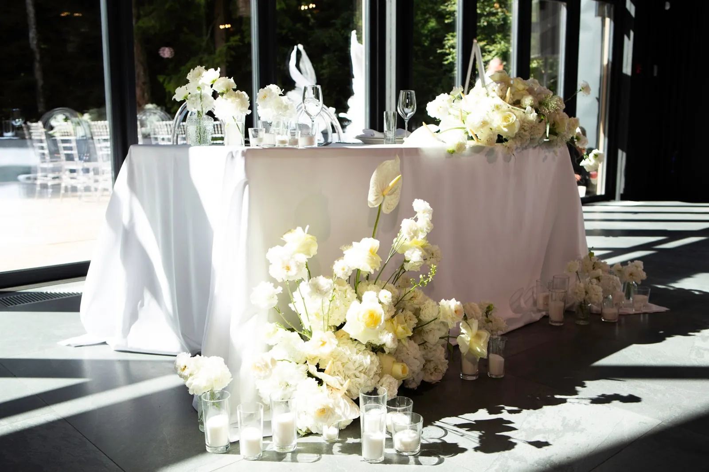
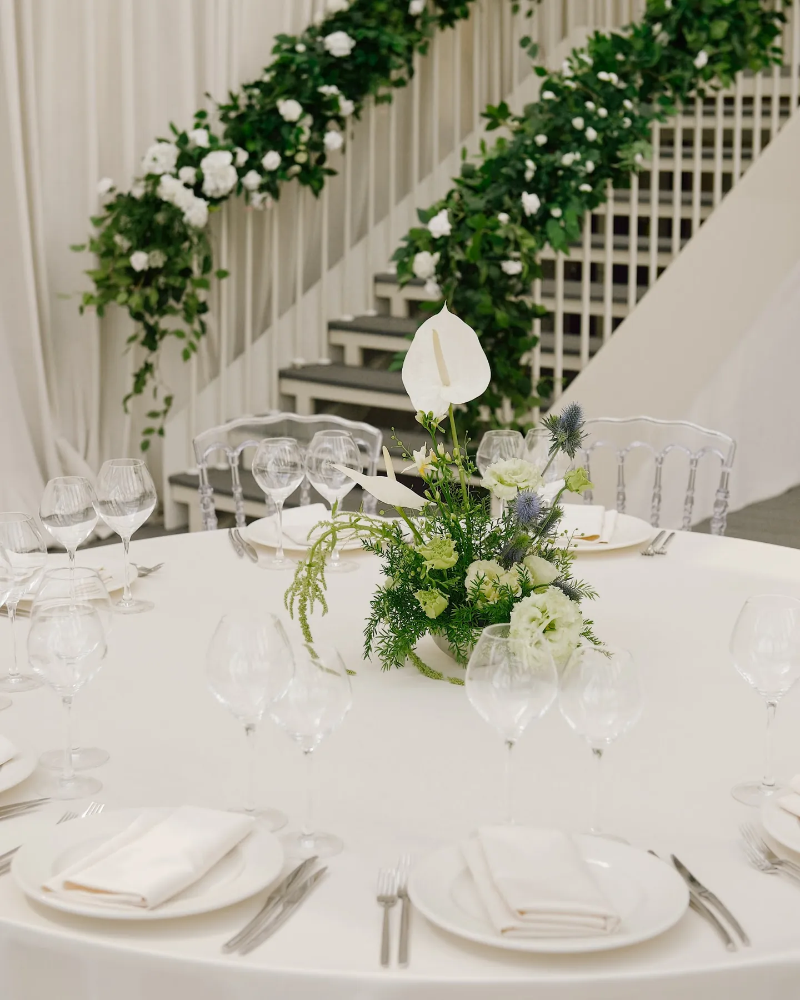
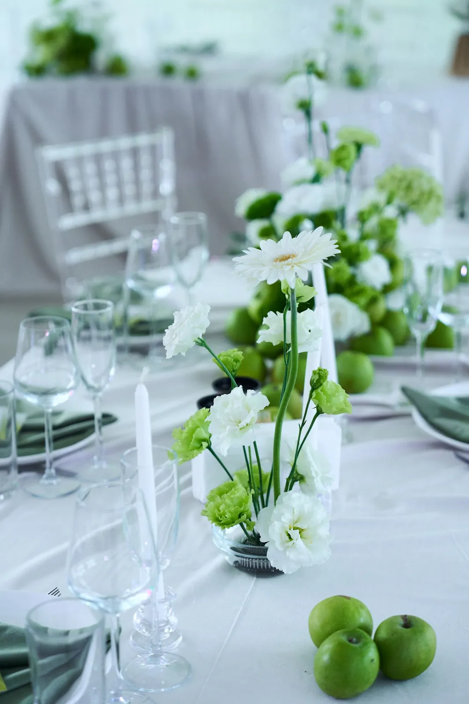
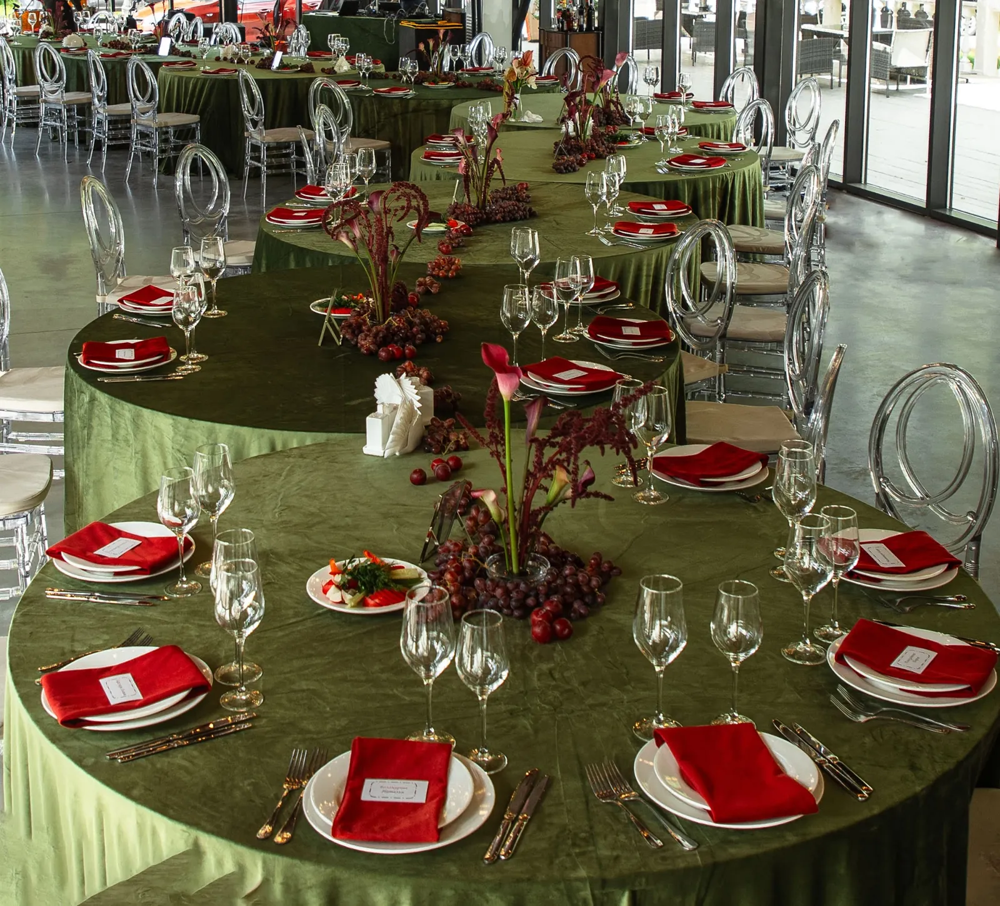

Гости проводят за столом большую часть вечера, а президиум — на половине фотографий. Поэтому стол — главная поверхность для декора на свадьбе. Рассказываем, как оформить президиум и гостевые столы, чтобы было красиво и удобно.
Президиум
Президиум — стол молодожёнов, главная точка зала. Его оформляют сильнее остальных: пышные композиции по фронту стола, цветы и свечи на полу, драпировка или зелень на заднем плане. Важно, чтобы декор не закрывал пару — фотографы снимают вас за столом весь вечер.


Гостевые столы
Низкие композиции — не мешают гостям видеть друг друга и разговаривать. Высокие — на подставках выше уровня глаз, создают объём в зале. На длинных столах хорошо работает гирлянда из зелени и цветов вдоль всего стола со свечами.
Для каждого стола — номер или название, карточки рассадки, иногда меню и небольшой подарок гостю.


Текстиль, посуда и свечи
Скатерть задаёт цвет всего зала: белая — нейтральная основа, цветной бархат или лён — сильный акцент. Салфетки, подтарельники, бокалы и приборы продолжают палитру. Свечи добавляют тёплый свет вечером — главное согласовать с площадкой открытый огонь.
Совет: соберите тестовую сервировку одного стола до свадьбы — так сразу видно, как сочетаются цветы, текстиль и посуда.


Как заказать
Мы оформляем президиум и гостевые столы на свадьбах в Москве и Подмосковье. Расскажите о количестве гостей, площадке и стиле — предложим идею и посчитаем смету.
Частые вопросы
Какой высоты делать композиции на гостевых столах?
Либо низкие, ниже уровня глаз сидящих гостей, либо высокие на подставках — выше. Средняя высота мешает общаться.
Можно ли использовать свечи на столах?
Обычно да, но открытый огонь нужно согласовать с площадкой; иногда используют свечи в стекле или LED-свечи.
Чем президиум отличается от гостевых столов по декору?
Президиум — главный акцент: композиции пышнее, часто добавляют цветы на полу и фон. Гостевые столы оформляют в той же палитре, но спокойнее.